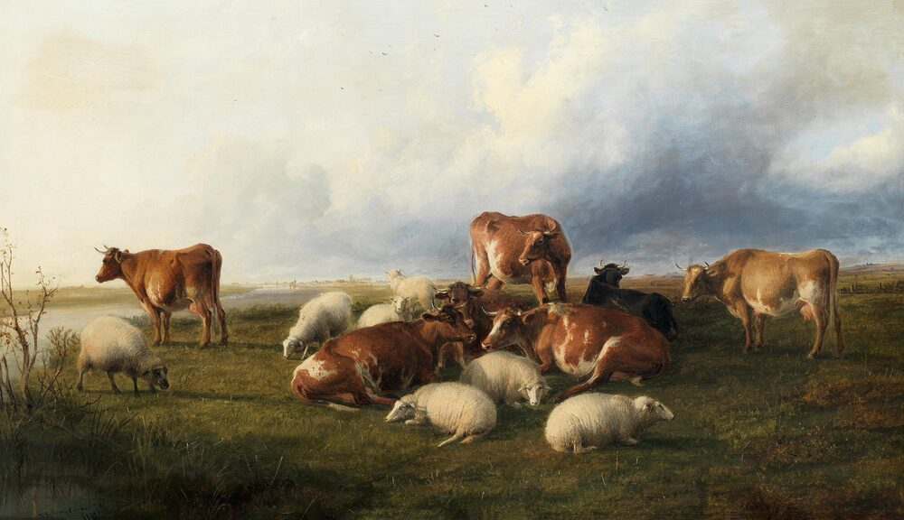
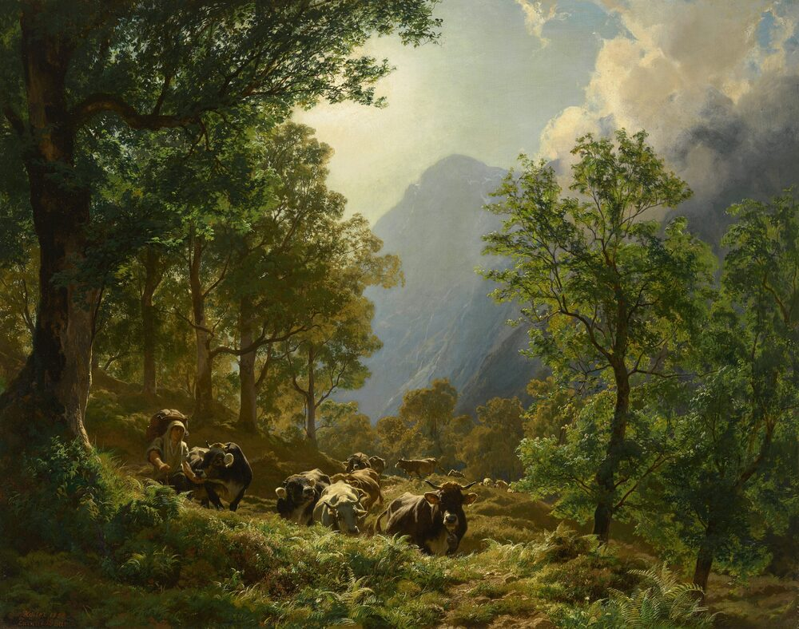

B1 · Work & Career
The Technology in a Field
Ear tags, electric fences and an app on a phone — how livestock farming actually works now.
Play the audio and follow along, then read it again on your own. Tap or hover over a highlighted word to see what it means.
A field with cattle in it looks much the same as it did a century ago. Almost nothing else about the operation does, and most of what has changed is invisible from the gate.

Start with the fence. A traditional fence has to be strong enough to physically stop an animal that weighs six hundred kilograms and has decided to leave. An electric fence does not: it is a single thin wire carrying a brief, high-voltage pulse, and it works because the animal touches it once, does not enjoy the experience, and thereafter treats the wire as a wall. It is far cheaper, it can be moved by one person in an afternoon, and that portability is the real advantage. Farmers use it to divide a large field into sections and move the herd between them every few days, which lets the grass in each section recover instead of being grazed to nothing.
Then the ear tag. Every animal in a commercial herd carries one, with a number that identifies it for its whole life. In most countries this is a legal requirement rather than a convenience, because if a disease appears in an abattoir, the authorities need to trace which farm the animal came from and which other animals it traveled with. The plain plastic tags are read by eye. Electronic ones contain a small chip that a handheld reader picks up at a distance, which matters when you are recording two hundred animals through a gate and cannot stop to squint at each one.
Once animals are identified individually, everything else becomes possible. A farmer can record each animal's weight over time, its treatments, its calves, and how much milk it gives, and can see which animals are worth keeping. Before tagging, that was guesswork and memory. The difference it makes is not dramatic on any single day; it accumulates over years.
The newest layer is monitoring. A collar or an ear sensor tracks how much an animal moves, how long it spends ruminating — chewing — and sometimes its temperature. A cow that is becoming ill usually reduces its rumination time a day or more before anything is visible to a person, so the system flags it early, when treatment is simpler and cheaper. The same sensors detect when a cow is ready to breed, which used to depend on somebody watching the herd at the right moment.
None of this replaces the farmer, and the people who sell it sometimes imply otherwise. The equipment reports; somebody still has to decide what to do, and a sensor that says an animal is unwell does not know why. It also has to be paid for, kept charged, and repaired when it fails in a wet field in February, which it will.

What has genuinely changed is the kind of attention the job requires. A hundred years ago a good stockman knew his animals by sight and carried the whole herd in his head, which worked up to a few dozen animals and not beyond. The technology does not make him better at that. It extends how far that kind of knowledge can reach.
Key Vocabulary
- pulse a short burst of electrical current
- to graze to eat growing grass
- ear tag a numbered plastic or electronic label fixed to an animal's ear
- abattoir a place where animals are slaughtered for meat
- to trace to follow something back to its origin
- chip a tiny electronic component storing information
- handheld small enough to be operated in one hand
- to squint to narrow your eyes in order to see something more clearly
- calf a young cow
- guesswork judgment based on no real evidence
- to flag to mark something as needing attention
- to breed to produce young
- stockman someone whose job is caring for farm animals
The Technology in a Field — B1 · Work & Career · Renan the Teacher, English Language Academy · https://renangrossi.github.io/englishclasses/reading/b1/animal-solutions.html
Interactive Exercises
Practice
Complete each exercise, then click Submit to see your score and an explanation for every answer.
Speaking & Writing
Discussion
There are no right answers here — use these to practice speaking, or write a short answer to each.
- The writer warns that sellers sometimes imply the equipment replaces judgment. Where else have you seen that claim made?
- A sensor notices illness a day before a person can. Would you trust it over an experienced farmer's eye?
- The technology “extends how far that kind of knowledge can reach”. Is that a fair description of what technology does in your own field?
- All of this has to be paid for and repaired. When is a farm too small for it to be worth having?
- Write about 150 words describing a piece of equipment used in your work, explaining what problem it solves and what it cannot do.